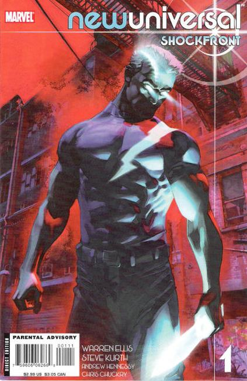

Planet Earth. Inhabited by six billion people. People leading ordinary lives, coping with everyday struggles. But on a night like any other, the Earth is rocked by the most startling celestial event ever witnessed by the human race. The White Event. And from its wake, a handful of humans emerge as something more. Acclaimed writer Warren Ellis (NEXTWAVE) and superstar artist Salvador Larroca (X-MEN) bring you this new universe - a universe witnessing superhuman power for the first time.
The story continues in newuniversal: Shockfront (Marvel, 2008 series).

Written by WARREN ELLIS Penciled by STEVE KURTH Cover by BRANDON PETERSON
Initially, there were four: A Starbrand. A Nightmask. A Justice. A Cipher. They are manifestations of god-like power on Earth, chosen by the Universe. In the wake of the cosmic phenomenon that empowered them, they have been threatened, hunted, and attacked. And now, they're about to discover that they're not alone. Acclaimed writer WARREN ELLIS (THUNDERBOLTS) and artist STEVE KURTH (LAST OF THE MOHICANS) bring you the return of this new universe: one experiencing superhuman power for the first time.